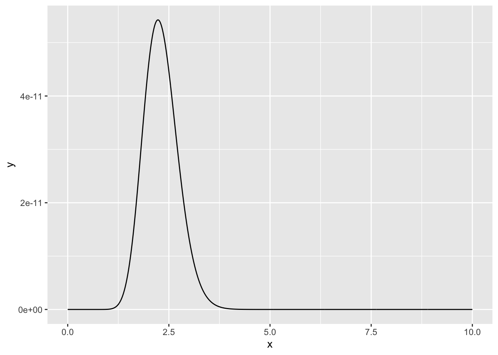
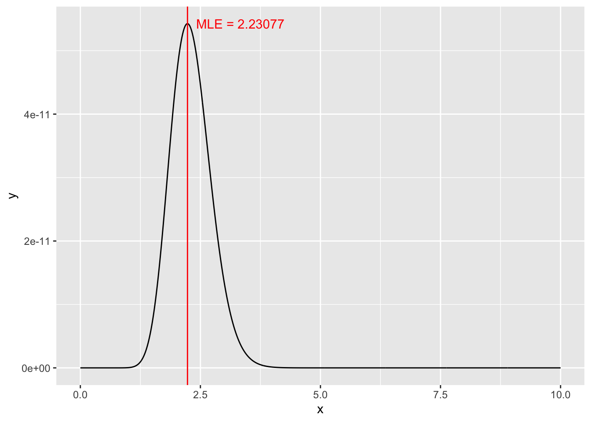
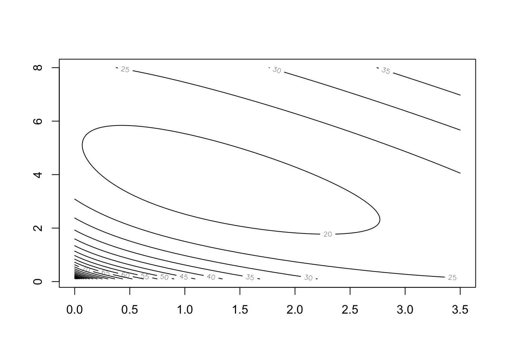
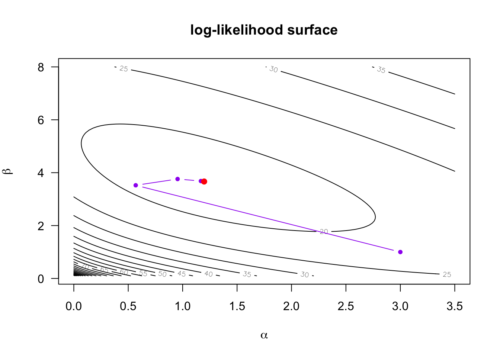

library(ggplot2)Optimisation Practical
Question 1: Bisection Method
Use the bisection method to find the maximum of \(g(x)\):
\[ \begin{aligned} g(x) &= \frac{log(x)}{1+x} \\ \implies g'(x) &= \frac{-log(x) + \frac{1}{x}(1+x)}{1+x} \\ \implies g'(x) &= \frac{-x \ log(x) + (1+x)}{x+x^2} \end{aligned} \]
## Question 1
g_dash_func <- function(x)
{
return((1 + x - x*log(x))/(x + x^2)^2)
}
bisection_method <- function(derivative, a, b, precision = 1e-12, iter = 1000)
{
for (i in 1:iter)
{
x <- (a + b)/2
grad_at_x <- derivative(x)
decision <- derivative(a)*grad_at_x
if (abs(a - x) < precision)
return(x)
else if (decision <= 0)
b <- x
else
a <- x
}
# If precision not reached, returns NA
return(NA)
}
## Question 2
x <- bisection_method(g_dash_func, 0.1, 10)
## Question 3
uniroot(g_dash_func, c(0.1,10))$root
[1] 3.591118
$f.root
[1] 1.690684e-08
$iter
[1] 9
$init.it
[1] NA
$estim.prec
[1] 6.103516e-05Question 2: Maximum Likelihood
Assume that these 13 observations are from a Poisson distribution, with rate parameter \(\lambda\):
counts <- c(3, 1, 1, 3, 1, 4, 3, 2, 0, 5, 0, 4, 2)## Question 1
poi_likelihood <- function(lambda, obs)
{
product <- 1
for (i in obs)
{
product = product * (((lambda^i)*exp(-lambda))/(factorial(i)))
}
return(product)
}
poi_log_likelihood <- function(lambda, obs)
{
sum <- 0
for (i in obs)
{
sum = sum + i*log(lambda) - lambda - log(factorial(i))
}
return(sum)
}
## Question 2
lambdas <- seq(0, 10, length = 1000)
vectorised_poi_likelihood <- Vectorize(poi_likelihood, "lambda")
data <- data.frame(x = lambdas, y = vectorised_poi_likelihood(lambdas, counts))
ggplot(data = data, aes(x, y)) +
geom_line()
## Question 3
# ?optim
# ?nlm
# Question 4
neg_poi_likelihood <- function(lambda, obs)
{
return(-1*poi_likelihood(lambda, obs))
}
neg_poi_log_likelihood <- function(lambda, obs)
{
return(-1*poi_log_likelihood(lambda, obs))
}
MLE <- optim(2, neg_poi_likelihood, obs = counts) # Note this doesn't work!!
MLE <- optim(2, neg_poi_log_likelihood, obs = counts)
MLE <- nlm(neg_poi_likelihood, p = 2, obs = counts) # Note this doesn't work!!
MLE <- nlm(neg_poi_log_likelihood, p = 2, obs = counts)
## Question 5
poi_log_likelihood_d1 <- function(lambda, obs)
{
sum <- 0
for (i in obs)
{
sum = sum + i/lambda - 1
}
return(sum)
}
poi_log_likelihood_d2 <- function(lambda, obs)
{
sum <- 0
for (i in obs)
{
sum = sum - i/(lambda)^2
}
return(sum)
}
newtons_method <- function(d1, d2, guess, obs, precision = 1e-12, iter = 1000)
{
for (i in 1:iter)
{
d1_value <- d1(guess, obs)
d2_value <- d2(guess, obs)
new_guess <- guess - d1_value/d2_value
if (abs(new_guess - guess) < precision)
return(new_guess)
else
guess = new_guess
}
# If precision not obtained
return(NA)
}
MLE <- newtons_method(poi_log_likelihood_d1, poi_log_likelihood_d2, 2, counts)
ggplot(data = data, aes(x, y)) +
geom_line() +
geom_vline(xintercept = MLE, color = "red") +
annotate("text", x = MLE, y = max(data$y),
label = paste("MLE =", round(MLE, 5)), color = "red", hjust = -0.1)
Question 3: Maximum Likelihood using nlm and Gauss-Seidel
For the following data assume the model (Poisson regression):
\[ Y_i \sim Poisson(\lambda_i) \qquad \qquad \lambda_i = \alpha + \beta x_i \]
y <- c(2,4,3,0,1,4,3,6,10,7)
x <- c(0.49909145, 1.24373850, 0.34376255, 0.03833630, 0.09699331,
0.19469526, 0.21237902, 1.56276200, 1.56909233, 1.88487024)## Question 1
poi_log_likelihood <- function(pars, y_obs, x_obs)
{
sum <- 0
for (i in 1:length(y_obs))
{
lambda_i <- pars[1] + pars[2] * x_obs[i]
sum <- sum + y_obs[i]*log(lambda_i) - lambda_i - log(factorial(y_obs[i]))
}
return(sum)
}
neg_poi_log_likelihood <- function(pars, y_obs, x_obs)
{
return(-1*poi_log_likelihood(pars, y_obs, x_obs))
}
nlm(neg_poi_log_likelihood, c(1,1), y_obs = y, x_obs = x)$estimate[1] 1.197778 3.665084## Question 2
d1_log_likelihood_alpha <- function(alpha, beta, y_obs, x_obs)
{
sum <- 0
for (i in 1:length(y_obs))
{
lambda_i <- alpha + beta * x_obs[i]
sum <- sum + y_obs[i]/lambda_i - 1
}
return(sum)
}
d1_log_likelihood_beta <- function(alpha, beta, y_obs, x_obs)
{
sum <- 0
for (i in 1:length(y_obs))
{
lambda_i <- alpha + beta * x_obs[i]
sum <- sum + (y_obs[i]/lambda_i - 1) * x_obs[i]
}
return(sum)
}
gauss_seidel <- function(pars, y_obs, x_obs, precision = 1e-15)
{
curr_pars <- c(Inf, Inf)
while (!all(abs(curr_pars - pars) < precision))
{
curr_pars <- pars
pars[1] <- uniroot(d1_log_likelihood_alpha, c(0,10), beta = pars[2],
y_obs = y_obs, x_obs = x_obs)$root
pars[2] <- uniroot(d1_log_likelihood_beta, c(0,10), alpha = pars[1],
y_obs = y_obs, x_obs = x_obs)$root
}
return(curr_pars)
}
gauss_seidel(c(1,1), y_obs = y, x_obs = x)[1] 1.197788 3.665062## Question 3
# Yes
## Question 4
d2_log_likelihood_alpha <- function(pars, y_obs, x_obs)
{
sum <- 0
for (i in 1:length(y_obs))
{
lambda_i <- pars[1] + pars[2] * x_obs[i]
sum <- sum - y_obs[i]/(lambda_i^2)
}
return(sum)
}
d2_log_likelihood_beta <- function(pars, y_obs, x_obs)
{
sum <- 0
for (i in 1:length(y_obs))
{
lambda_i <- pars[1] + pars[2] * x_obs[i]
sum <- sum - (y_obs[i]/(lambda_i^2)) * (x_obs[i]^2)
}
return(sum)
}
d2_log_likelihood_alpha_beta <- function(pars, y_obs, x_obs)
{
sum <- 0
for (i in 1:length(y_obs))
{
lambda_i <- pars[1] + pars[2] * x_obs[i]
sum <- sum - (y_obs[i]/(lambda_i^2)) * x_obs[i]
}
return(sum)
}
d2_log_likelihood_beta_alpha <- function(pars, y_obs, x_obs)
{
sum <- 0
for (i in 1:length(y_obs))
{
lambda_i <- pars[1] + pars[2] * x_obs[i]
sum <- sum - (y_obs[i]/(lambda_i^2)) * x_obs[i]
}
return(sum)
}
newtons_method <- function(pars, y_obs, x_obs, precision = 1e-18)
{
curr_pars <- c(Inf, Inf)
while (!all(abs(curr_pars - pars) < precision))
{
curr_pars <- pars
pars <- pars - matrix(c(d1_log_likelihood_alpha(curr_pars[1], curr_pars[2], y_obs, x_obs),
d1_log_likelihood_beta(curr_pars[1], curr_pars[2], y_obs, x_obs)),
byrow = T, ncol = 2) %*%
solve(matrix(c(d2_log_likelihood_alpha(curr_pars, y_obs, x_obs),
d2_log_likelihood_alpha_beta(curr_pars, y_obs, x_obs),
d2_log_likelihood_beta_alpha(curr_pars, y_obs, x_obs),
d2_log_likelihood_beta(curr_pars, y_obs, x_obs)),
byrow = T, nrow = 2))
}
return(as.vector(curr_pars))
}
newtons_method(c(1,1), y_obs = y, x_obs = x)[1] 1.197777 3.665086## Question 5
# You would use Gauss-Seidel when the 2nd derivative cannot be calculated
# If it can be calculated, Newtons method converges much quicker.
## Question 6
# Confirming answers
as.vector(glm(y~x, family = poisson(link = "identity"))$coefficients)[1] 1.197764 3.665103Question 4: Poisson Regression with Newton’s Method
The following data are from a Poisson distribution with \(\mu_i = \alpha + \beta x_i\), i.e., every observation has a different mean (expected value), the mean depends on an explanatory variable \(x_i\). Note: no log-link.
There are only two parameters. From the code below you should learn how to:
find derivatives in R,
create and understand contour plots,
write an algorithm for Newton’s method for more than one-dimensional problems.
use expressions and evaluate them
y <- c(2, 4, 3, 0, 1, 4, 3, 6, 10, 7)
x <- c(0.49909145, 1.24373850, 0.34376255, 0.03833630, 0.09699331, 0.19469526,
0.21237902, 1.56276200, 1.56909233, 1.88487024)
llik.full <- function(p) { # p is a vector of 2 parameters
ll <- sum(dpois(y, lambda = p[1] + p[2] * x, log = TRUE))
return(-ll)
}
# parameter values over which want to calculate loglik
p1.v <- seq(0,3.5,length=100)
p2.v <- seq(0.1,8,length=100)
# create an array with dimensions 10000 and 2, with
# every combination of the values
pp <- expand.grid(x = p1.v, y = p2.v)
z <- numeric(length(pp$x))
# calculate loglik at every combination of param. values
for(i in 1:length(pp$x)) {
z[i] <- llik.full(c(pp$x[i],pp$y[i]))
}
Z <- matrix(z, nrow = 100)
contour(p1.v, p2.v, Z, add = F, nlevels = 20)
f <- expression(-(alpha + beta * x) + y * log(alpha + beta * x))
da <- D(f, "alpha")
db <- D(f, "beta")
(dab <- D(da, "beta"))-(y * (x/(alpha + beta * x)^2))(daa <- D(da, "alpha"))-(y * (1/(alpha + beta * x)^2))(dbb <- D(db, "beta")) -(y * (x * x/(alpha + beta * x)^2))init <- c(3, 1)
tol <- 0.01
l.current <- init
alpha <- l.current[1]
beta <- l.current[2]
contour(p1.v, p2.v, Z, add = FALSE, nlevels = 20,
xlab = expression(alpha), ylab = expression(beta),
main = "log-likelihood surface", las = 1)
points(alpha, beta, col = "purple", pch = 20)
g1 <- c(sum(eval(da)), sum(eval(db)))
H <- matrix(c(sum(eval(daa)), sum(eval(dab)),
sum(eval(dab)), sum(eval(dbb))), nrow = 2)
l.new <- l.current - g1 %*% solve(H)
alpha <- l.new[1]
beta <- l.new[2]
lines(c(alpha, l.current[1]), c(beta, l.current[2]),
col = "purple", pch = 20, type = "b")
for (i in 1:9) {
l.current <- l.new
g1 <- c(sum(eval(da)), sum(eval(db)))
H <- matrix(c(sum(eval(daa)), sum(eval(dab)),
sum(eval(dab)), sum(eval(dbb))), nrow = 2)
l.new <- l.current - g1 %*% solve(H)
alpha <- l.new[1]
beta <- l.new[2]
print(c(l.new))
lines(c(alpha, l.current[1]), c(beta, l.current[2]),
col = "purple", pch = 20, type = "b")
}[1] 0.9534927 3.7604267
[1] 1.167730 3.684351
[1] 1.197372 3.665358
[1] 1.197777 3.665087
[1] 1.197777 3.665086
[1] 1.197777 3.665086
[1] 1.197777 3.665086
[1] 1.197777 3.665086
[1] 1.197777 3.665086out <- optim(par = init, fn = llik.full)
points(out$par[1], out$par[2], pch = 19, col = "red")
Question 5: Constrained (linear) Optimization
Maximize \(2x + 2y + 3z\) subject to:
\[ \begin{align*} -2x + y + z & \le 1 \\ 4x - y + 3z & \le 3 \\ x \ge 0, y \ge 0, z & \ge 0\\ \end{align*} \]
constrOptim(theta, f, grad, ui, ci): Look at its help function and the example at the bottom of the help page.
For constrOptim the constraints need to be rephrased such that \(ui \cdot \theta - ci >= 0\), where \(\theta\) is the parameter vector.
\[ \begin{align*} 2x - y - z + 1 & \ge 0 \\ -4x + y - 3z + 3 & \ge 0 \\ x \ge 0, y \ge 0, z & \ge 0\\ \end{align*} \]
theta_init <- c(0.1, 1, 0.1)
minimise <- function(xyz) c(crossprod(c(-2,-2,-3), xyz))
ui_matrix <- matrix(c( 2, -1, -1,
-4, 1, -3,
1, 0, 0,
0, 1, 0,
0, 0, 1),
byrow = T, nrow = 5)
ci_matrix <- matrix(c(-1, -3, 0, 0, 0), nrow = 5)
output <- constrOptim(theta = theta_init, f = minimise, grad = NULL,
ui = ui_matrix, ci = ci_matrix)
as.vector(round(output$par, 5))[1] 2 5 0